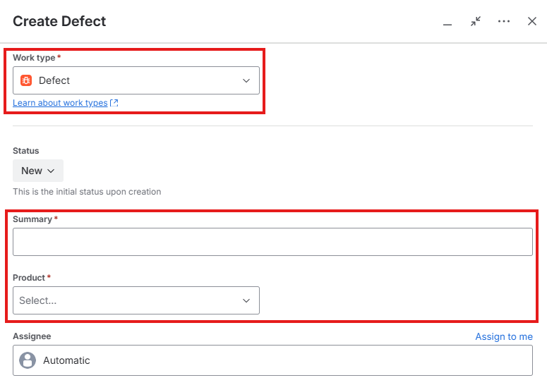
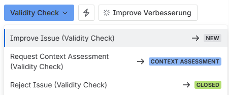
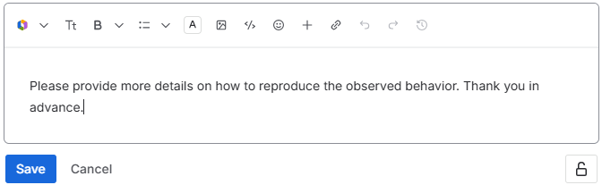

Work instruction training · AA Jira Issue Management System
Jira Issue Management System (IMS)
How defects and improvements are reported, validated, assessed, approved, implemented and closed in the Jira project “Issue Management”.
How defects and improvements are reported, validated, assessed, approved, implemented and closed in the Jira project “Issue Management”.
The IMS is the validated Jira project in which every defect and improvement of our hardware and software products is recorded and dispositioned. It replaces the Mantis defect management system.
Jira project Issue Management (IM), board 682 on ptwdosimetry.atlassian.net.
| Term | Meaning |
|---|---|
| Issue / Ticket | Jira’s generic word for a work item — here a defect or an improvement. |
| Defect | Work item that describes a problem. |
| Improvement | Work item that improves properties of an existing product. |
| Software problem | Deviation from a requirement or design specification (AA Software Problem Resolution). |
| RAT / SRAT | Risk Analysis Table / Security Risk Analysis Table. |
| Role | Key responsibility |
|---|---|
| Reporter (all) | Creates issues, answers questions, improves the issue if it is sent back. |
| Project Lead (PL) | Validity Check; starts and closes the work; can reopen. |
| Product Manager (PM) | Context Assessment; requests Risk Assessment, sends back or rejects. |
| Quality Manager (QM) | Risk Assessment of defects; approves or sends back. Official title: Risk Manager. |
For everyone: creating a defect or an improvement that can be assessed without follow-up questions.

The Project Lead checks every new issue against four criteria. Give as much information as possible up front, so it is not sent back to you.
| Criterion | Valid when … |
|---|---|
| Description | clear and complete |
| Reproducibility | steps to reproduce are provided |
| Expected vs. actual | both behaviours are clearly defined |
| Evidence | screenshots, logs etc. demonstrate the issue |
Description, Reproducibility, System Environment and Context Assessment come with a template that tells you what to enter.
States, transitions and who moves the issue on.
| From | Transition | To | Done by | New assignee |
|---|---|---|---|---|
| — | Report Issue | New | Reporter | Project Lead |
| New | Validate Issue | Validity Check | PL | PL |
| Validity Check | Request Context Assessment | Context Assessment | PL | Product Manager |
| Context Assessment | Request Risk Assessment | Risk Assessment | PM | Quality Manager |
| Risk Assessment | Approve Issue | Backlog | QM | PL |
| Backlog | Resolve Issue | In Progress | PL | PL |
| In Progress | Close Issue | Closed | PL | PL |
| Closed | Reopen Issue | Context Assessment | PL | PL |
| VC · CA · RA | Improve Issue | New | PL · PM · QM | Reporter |
| VC · CA | Reject Issue | Closed | PL · PM | — |
Something does not work as specified or intended.
An existing product should get better.
What the Project Lead, the Product Manager and the Quality Manager check and decide.
When you start on a new issue, first move it to Validity Check — so everyone sees it is being looked at. Then check it against the four criteria (description, reproducibility, expected vs. actual, evidence).
| Outcome | Transition | Result |
|---|---|---|
| Valid | Request Context Assessment | Context Assessment, assigned to the PM |
| Not enough information | Improve Issue | New, assigned to the Reporter |
| Invalid / obsolete | Reject Issue, Resolution “Invalid” | Closed |

The PM decides how the issue fits the product and its use, and records the result in the Context Assessment field.
| Outcome | Next state |
|---|---|
| Defect, assessed | Risk Assessment → QM |
| Improvement, acceptable | Backlog |
| Details missing | New → Reporter |
| Not valid | Closed (Invalid) |
Defects only. The QM evaluates the risk with regard to the product characteristics and its intended use.
| Outcome | Next state |
|---|---|
| Acceptable | Approve Issue → Backlog, assigned back to the PL |
| Details missing | Improve Issue → New, Reporter |
No open questions — ready for the engineering team.
PL moves the issue once engineering starts. Implementation needs a Change Request per SOP-10.12 — enter its number in the Change Request field (and the Q-Request number, if any).
PL closes after confirming: verification complete · all acceptance criteria met · evidence linked.
New information about a closed issue? The PL reopens it — it goes back to Context Assessment.
Write the rationale into the description or a comment.
